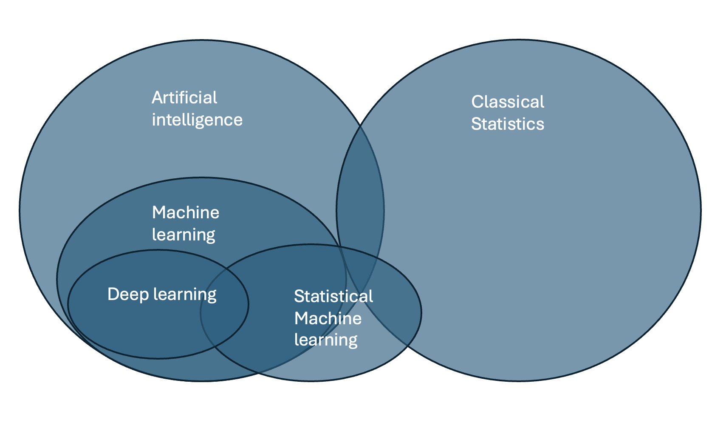
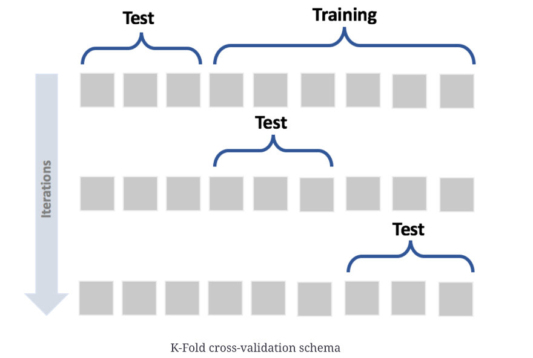

What is machine learning?
Machine learning and classical statistics look at different questions on different levels (group, individual) and use different methods.

| Statistical Machine Learning | Classical Statistics |
|---|---|
| Focus on prediction (of a new unseen observation) | Explain variance in a population and at group level |
| • for a single new observation | • t-test, ANOVA |
| • Support vector machines, neural networks and other pretrained models | • A significant p value for one group/observation does not predict significance for a new observation |
| Statistical Machine Learning | Classical Statistics |
|---|---|
| Focus: Model evaluation and performance Model fitting in the TRAINING SET • Depends on the solver/optimizer (gradient descent, sampling, etc.) • Depends on the criterion (MAP, likelihood, etc.) Use of evaluation metrics in the TEST SET • RMSE • Rho • Explained variance • MSE • MSLL |
Comparison of observed distribution against a hypothetical statistical distribution • Depends on assumptions • “Assuming that the observed distribution is N~(0,1), does my observation fall within ±97.5th centile?” • Individual predictions not possible |
| Machine Learning | Classical Statistics |
|---|---|
| • Can find hidden patterns in complex data • Can use probabilities instead of hard assignments (dimensional) • Can manage more complex, non-Gaussian, heteroscedastic data patterns |
Many tests in classical statistics rely on Gaussianity and homoscedasticity (e.g., t-test, ANOVA) |
| Machine Learning | Classical Statistics |
|---|---|
| Empirical evaluation • Out-of-sample evaluation • Train–test split • (Elaborate) cross-validation procedures • Two-step evaluation process |
• Evaluates p-value once • Tests the null hypothesis against an alternative |
| • Can handle multi-outcome settings (multiple classes, predictions, etc.) • Multi-class prediction and learning • Can handle multiple inputs |
• Many tests assume a single outcome or comparison |
Different types of machine learning
| Supervised Machine Learning | Unsupervised Machine Learning |
|---|---|
| Input: X, Y Output: Patterns or associations between X and Y Examples: - Regression of body weight (Y) onto age (X) - Classification of bird species (Y) based on body weight (X) |
Input: Y Output: Patterns derived from Y following a set of rules Example: - Subgroups within bird species based on characteristics of the beak (Y) |
Rule of thumb: start simple (linear/logistic, trees), validate rigorously, then consider more complex models if they add clear value.
Concepts in Machine learning
Cross-validation
Cross-validation is a technique used to evaluate how well a machine learning model generalizes to new, unseen data.
The data is split into several parts (called folds). The model is trained on some folds and tested on the remaining one — this process is repeated so that every fold serves once as a test set.
The average performance across all folds gives a more reliable estimate of the model’s accuracy or error than a single train–test split.
In short: train multiple times, test multiple times, average the results → estimate generalization.

Grid search
Grid search is a method used to find the best set of hyperparameters for a machine learning model.
It systematically tries all possible combinations of parameter values from a predefined “grid,” trains a model for each combination (often using cross-validation), and compares their performance.
The combination that gives the best validation score is selected as the optimal set of parameters.
In short: try many parameter combinations → evaluate → keep the best one.
Loss function
A loss function measures how far a model’s predictions are from the true values — it’s what the model tries to minimize during training.
While grid search optimizes hyperparameters (external settings like learning rate or regularization strength), the loss function guides the optimization of the model parameters themselves (e.g., weights and intercepts).
In short: the loss function teaches the model, whereas grid search tunes how the model learns.
Optimizer
An optimizer is the algorithm that automatically adjusts the model’s parameters (like weights and intercepts) to minimize the loss function.
It’s how the model learns from data.
At every step, the optimizer looks at how changing each parameter would affect the loss, and then moves them in the direction that reduces the loss the most.
Examples of optimizers
- Gradient Descent — the basic algorithm that updates parameters step by step in the direction of the steepest decrease of loss.
- Stochastic Gradient Descent (SGD) — updates using small random batches of data (faster for big datasets).
- Adam, RMSProp, Adagrad — advanced optimizers that adapt learning rates automatically for each parameter.